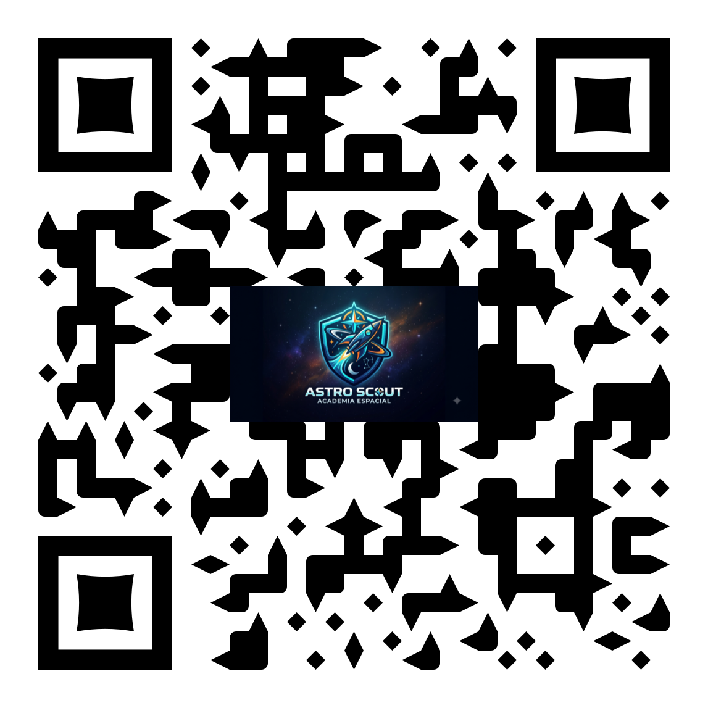
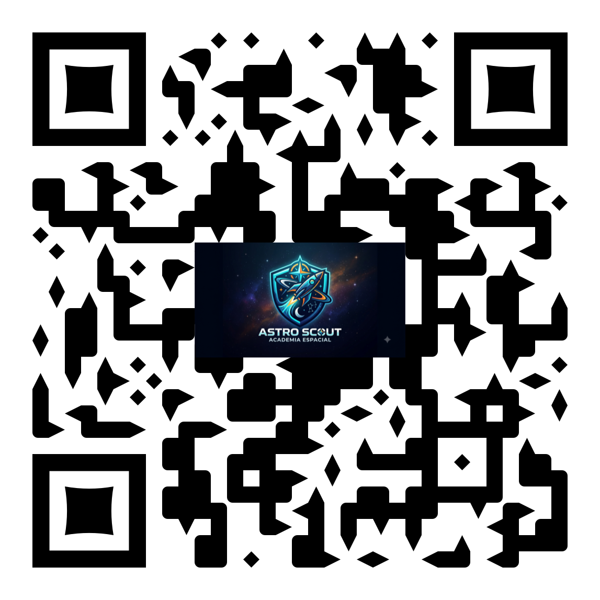
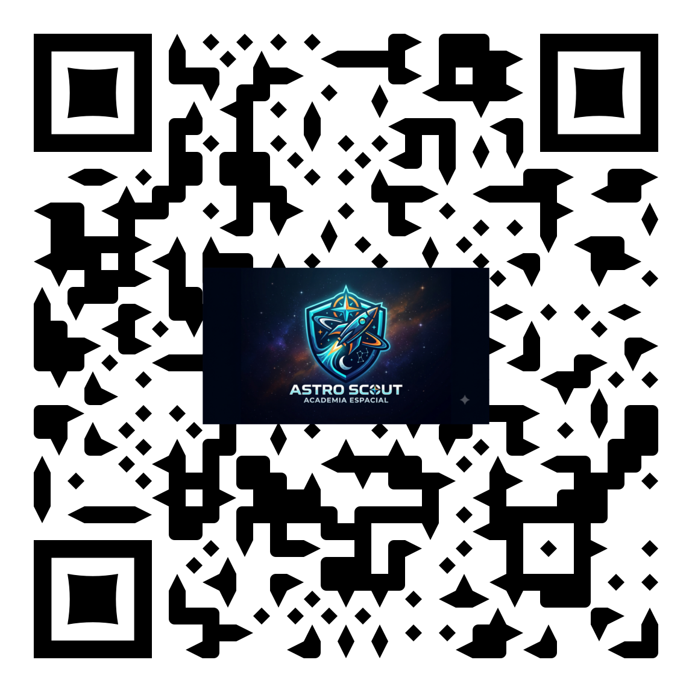
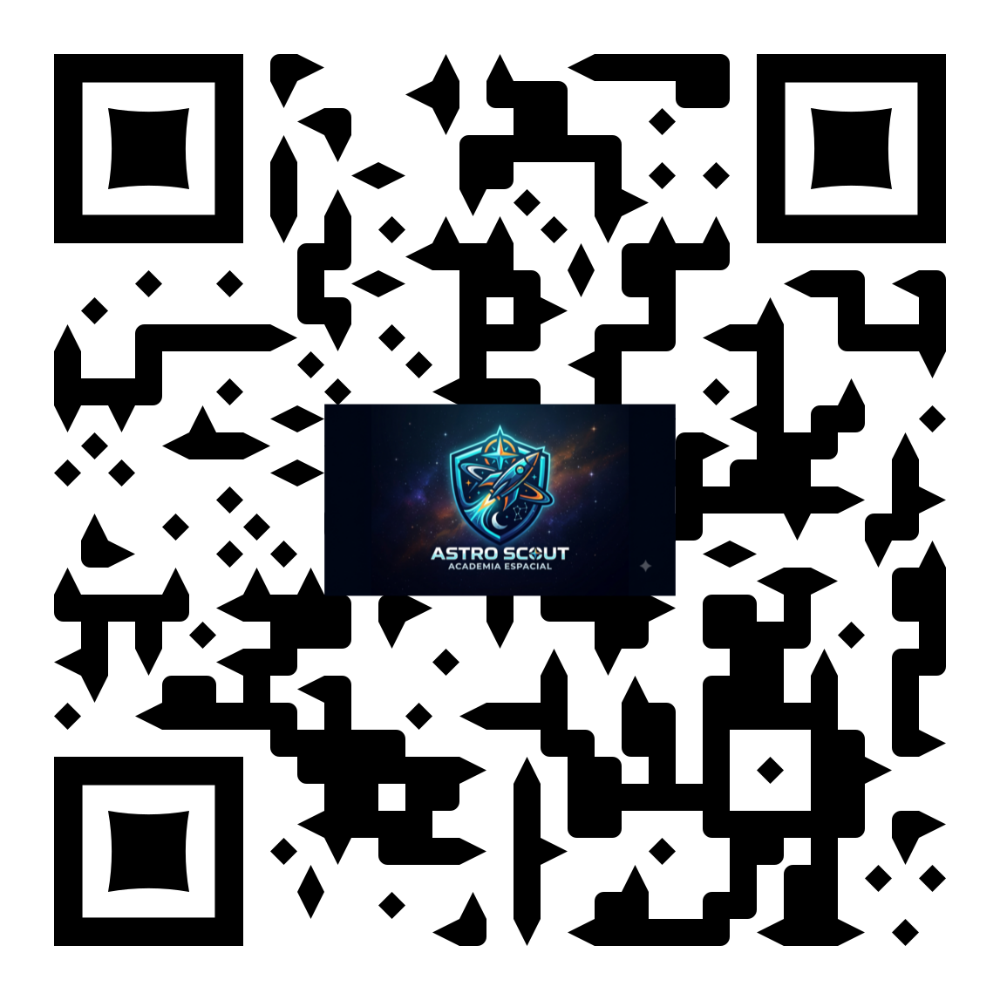
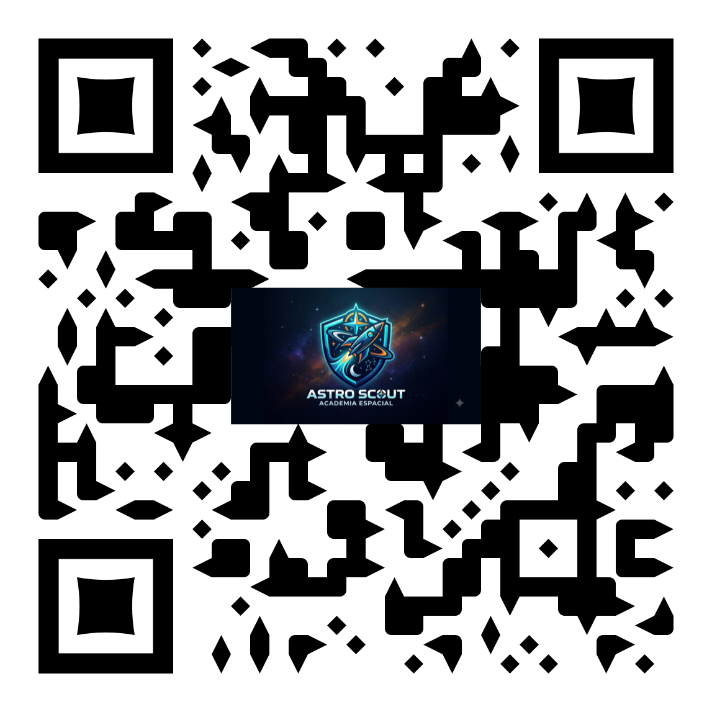

Cada estación pone a prueba una habilidad real de exploración espacial. Escanea el QR de la estación, selecciónala aquí, o actívala con la mano. Completa cada gesto para desbloquear la siguiente y subir de rango.
Imprime y coloca cada código en su estación física. Al escanearlo se abre directamente esa estación.

01 · Casco
02 · Brújula
03 · Botiquín
04 · Panel O₂
05 · GuanteCompleta cada estación para desbloquear su insignia y ganar el rango de Astro Scout.